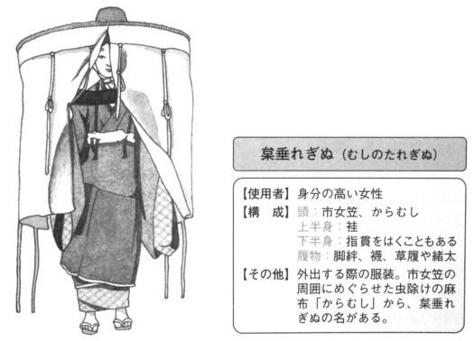
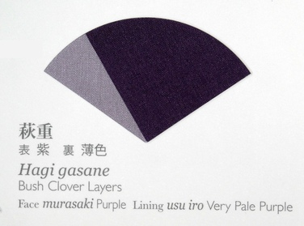

ni'o jo'a
pu ki penmi lo nanmu pe lo de'u morsi xadni ca lo prulamdei
.i
prulamdei
sei sa'a ze'i smaji se'u
ju'o cu'i ke donri midju sa'e nai la'a
.i
se stuzi da po'e la .seki,iaman. bi'o la .iamacinan.
.i
le nanmu ku jo'u le ninmu poi se marce lo xirma ku'o mo'i zo'i cadzu klama fa'a la .seki,iaman.
.i
le ninmu cu se gacri lo bukprmuci to'i sa'a lo bukprmuci cu caxno bukpu fi'o te zbasu lo cilta be la'o ly Boehmeria nivea ly pi'o lo'e ninmu te zu'e lo nu rivbi tu'a lo cinki kei ta'i lo nu vo'a ru'u dandu lo mapkrtcime lo korbi

.i sitna la'o py 池上 良太 『図解 日本の装束』, 新紀元社, 東京, 2008 py toi [bukprmuci]
.i se ri'a bo
tu'a lo flira na se ganse mi
.i
lo se viska cu po'o ke zirprxagi senta to'i sa'a lo za'i zirprxagi senta cu za'i dasni lo zirpu .e lo kandi te tai lo senta

.i sitna la'o py 太田 耕嗣 『源氏物語 千年の色: 襲色目』, 太田工芸, 京都, 2005 py toi [zirprxagi senta] ke'e za'a bukpu skari
.i
lo xirma cu skari kandi
sei sa'a ze'i smaji se'u
gi'e ju'o cu'i katna cnici kerfa za'a xirma
.i
xu preti lo ni rajycla
.i
lo ni rajycla ku gutcrki to'i sa'a pa gutcrki cu mitre li ji'i pi no ci no ci .i lo se fanva na se pagbu be lo se fanva be fu zo li'o no'u lo'u mu no su'i le'u .i ku'i lo di'u nu vimcu cu tcaci lo pu banjupunu .i se ni'i bo lo xirma ni rajycla cu mitre li su'e ji'i pa pi xa vo toi [gutcrki] li su'e li'o vo xu
.i sei sa'a ze'i smaji
ro bu'a zo'u se gu bu'a
gi mi budjo cilre
.i se ki'u bo
na satci djuno tu'a ra
.i
le nanmu
sei sa'a ze'i smaji se'u
na'i cu dasni lo barda dakfu .e ji'a lo bagyce'a jo'u celga'a
.i ra'u
nau ca ji'a sai satci morji lo du'u lo xekri cinta tubnu gau vasru za'u re no jamna celga'a
ni'o
ca'o ba'e na'e se xanri ji'a lo nu le nanmu ba binxo ti
.i ku'i jo'a
lo'e prenu nu jmive cu ju'o simsa be lo djacu bo dirgo ja lindi
.i .uu sai
sei no da ka'e se cusku se'u kecti cuntu co'i
{kind=link}
{kind=link}